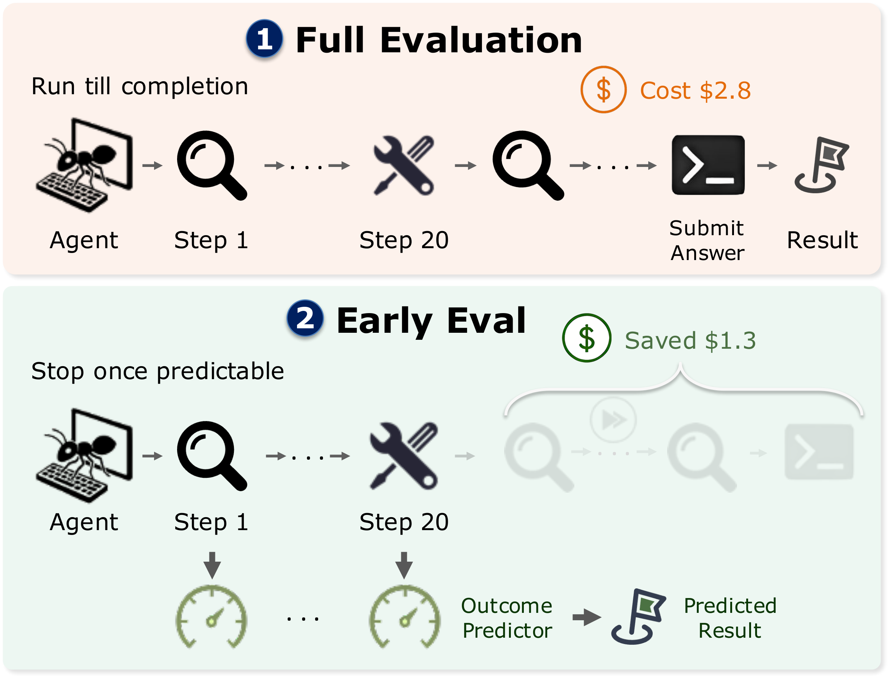
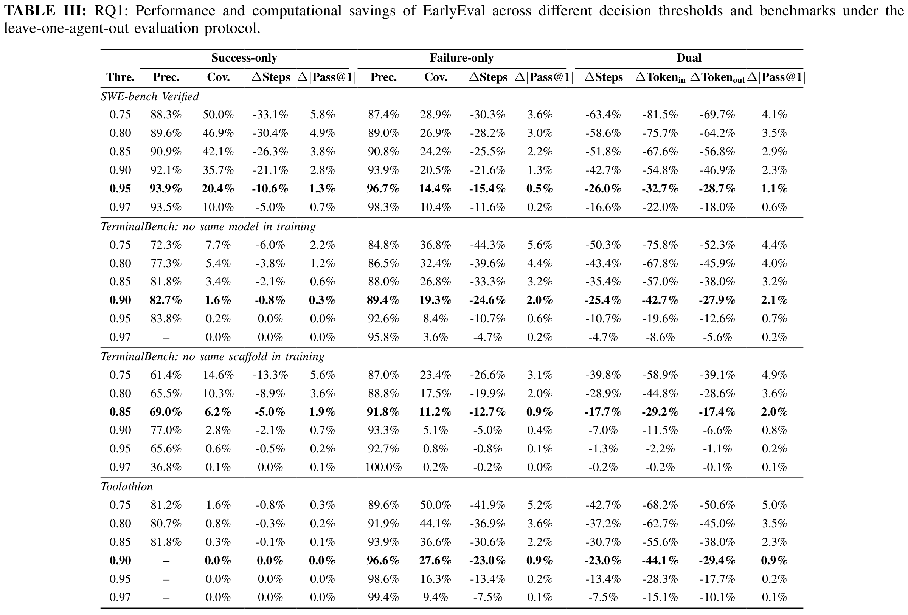

一次 Agent 评测可能需要读文件、改代码、运行测试并反复修订。即使最终只记录成功或失败，中间也可能花掉很多调用。EarlyEval 尝试从已经发生的行为预测最终结果，达到阈值就提前结束这次运行，用预测分数估计 Agent 的表现。
本文解读 Yuling Shi、Zhensu Sun 等人的 EarlyEval: Cheaper Agent Evaluation via Early Outcome Prediction，依据 2026 年 9 月 2 日提交的 arXiv v1。读这篇文章时要始终保留一个区别，提前记为成功的运行，后续产物尚未得到完整执行的验证。
一、课题解读：怎样降低长流程 Agent 的评测成本
开发 Agent 时，研究者要反复比较提示、工具、框架和模型。一次修改之后，如果每道题都完整重跑，评测费用会随着迭代次数增长。长轨迹还有累积上下文成本，后面的模型调用可能携带越来越多的历史消息。
完整执行有其价值，能观察最终文件、环境状态和实际测试结果。低成本估计则需要回答，哪些运行已经提供足够信号，可以较可靠地推断结果？同时要检查，少跑步骤会对成功率和系统排名产生多大误差。这个方向研究的是评测估计的成本与可信度。
二、相关文献解读：减少题目与减少单题执行
| 工作 | 已有探索 | 与本篇的连接 |
|---|---|---|
| tinyBenchmarks | 用少量代表性样本估计大基准上的表现 | 从任务选择这一侧降低评测费用，EarlyEval 研究保留任务后如何少执行部分步骤 |
| SWE-bench | 通过真实仓库问题和可执行测试评价补丁 | 提供完整运行的判定参照，Verified 子集还提供参考补丁 |
| Terminal-Bench | 评价终端环境中的多步骤任务 | 检查没有参考解特征时，行为信号能否支持早停 |
EarlyEval 利用同一基准上其他 Agent 已完成的轨迹训练预测器。它适合有历史评测记录、需要反复比较新配置的场景。全新基准的第一次运行仍需建立完整轨迹与真实标签。
三、研究问题解读：节省执行后，还能相信哪些结论
论文将实验组织为四个问题。
- 能否预测未见 Agent 配置的最终结果，并节省步骤和 token？
- 提前停止会把每个 Agent 的成功率改动多少，又是否保留排名？
- 缺少参考答案或某类特征时，方法是否仍有效？
- 轻量树模型相对其他分类器和 LLM 裁判处于怎样的成本与保真度位置？
这里的未见 Agent 指框架与基础模型构成的配置。实验主要考察同一基准上的新配置，测试题仍可在其他 Agent 的历史运行中出现。
四、方法解读：从历史前缀训练，到逐步预测停止

第一步：把完整轨迹拆成带最终标签的前缀
历史轨迹包含每一步动作、环境反馈和最终成功或失败标签。作者排除短于十步的轨迹，再把长为 T 的运行拆成从第 0 步到第 T 步的多个前缀。每个前缀的学习目标都是该运行的最终结果。
这意味着“前面一直报错、最后成功”的早期前缀仍标为最终成功。每条前缀权重为 1/(T+1)，让长轨迹和短轨迹的总训练权重相同，避免少数长运行主导训练。第 III-C–D 节

第二步：提取当前已经可见的特征
行为特征包括工具调用、编辑与测试次数、事件首次出现时间、重复动作、连续只读、错误类型及测试变化。文本特征分别编码任务描述、完整和最近动作、完整和最近反馈，用 TF-IDF 和 SVD 压成低维向量。
SWE-bench Verified 还可加入参考补丁属性，以及当前修改与参考文件、符号、测试名称的重合。这些特征位于评价端。TerminalBench 与 Toolathlon 的实验禁用参考解特征。方法能看到什么需要按基准区分，不能把有参考解配置直接当作开放任务中的通用完成判断。Table II
第三步：训练成功与失败两个 LightGBM 分类器
两个分类器分别学习最终成功和最终失败。训练中按任务组织训练与验证划分，同一轨迹的所有前缀留在同一侧。每折保留约 15% 训练轨迹用于早停和 Platt 概率校准，超参数跨基准固定，实验随机种子为 42。
Platt scaling 将树模型原始分数重新映射到概率刻度。校准之后，仍需在实际停止样本上测量可靠性。设定 0.95 的阈值并不能自动保证经验准确率恰好等于 95%。论文报告树模型在单 CPU 核上的预测小于一毫秒，这项表述针对分类器打分，完整特征处理与部署成本需要另外测量。第 III-D–E、IV-D 节
第四步：达到阈值就记录预测结果
每一步运行后计算成功与失败概率。任一概率达到对应阈值，就停止并把预测标签记为这道任务的分数；若始终没有触发，则保留完整运行的真实结果。阈值高时通常少干预，阈值低时能更早停止，也会增加误判。
因此，早停后记作成功表示“预测完整运行会成功”。它没有交付后半程本应产生的全部证据。作者在讨论中将方法定位于开发期的低成本反馈，并明确建议最终正式成绩仍完整执行。第 VIII 节
五、实验设计与结果：节省多少，又改变多少分数
主实验设置：留出 Agent 配置，用完整结果核对预测
作者收集三个基准共 21,678 条历史轨迹。
| 基准 | 任务数 | Agent 配置数 | 收集轨迹数 | 参考解特征 |
|---|---|---|---|---|
| SWE-bench Verified | 500 | 16 | 7,805 | 可用 |
| TerminalBench | 89 | 37 | 6,757 | 禁用 |
| Toolathlon | 108 | 22 | 7,116 | 禁用 |
来源：第 IV-A 节。表列收集规模，方法另说明排除短于十步的轨迹。Agent 配置由框架与模型配对定义，各基准的轨迹和重复次数不同。
评测采用 leave-one-agent-out，每次留一个配置测试，用其他配置训练。TerminalBench 还分别排除与测试配置相同的基础模型，或相同的框架。SWE-bench Verified 与 Toolathlon 各使用固定框架，所以它们主要检验模型配置变化。
指标要分清分母。Coverage 是所有轨迹中被提前停止的比例；Accuracy 是提前停止的轨迹中预测正确的比例。单个成功或失败分类器的 Precision 只统计它自行停止并判定的轨迹。成功率绝对偏差则先计算每个 Agent 与完整评测的百分点差，再取绝对值和均值。
主实验结果：节省与成功率误差的折中
下表摘取 Table III 中作者推荐的阈值，均使用双分类器。为便于阅读，将原表负的资源变化写成正的“减少量”。
| 基准与留出设置 | 阈值 | 步骤减少 | 输入 token 减少 | 输出 token 减少 | 成功率平均绝对偏差 |
|---|---|---|---|---|---|
| SWE-bench Verified | 0.95 | 26.0% | 32.7% | 28.7% | 1.1 个百分点 |
| TerminalBench，排除同模型 | 0.90 | 25.4% | 42.7% | 27.9% | 2.1 个百分点 |
| TerminalBench，排除同框架 | 0.85 | 17.7% | 29.2% | 17.4% | 2.0 个百分点 |
| Toolathlon | 0.90 | 23.0% | 44.1% | 29.4% | 0.9 个百分点 |
来源：Table III，PDF 第 8 页。不同基准阈值不同，不能将所有节省与误差视为同一统一设置。

在 SWE-bench Verified 的推荐点，34.8% 轨迹被提前停止，停止样本上的准确率为 95.0%。两个分类器各自的 precision 为成功 93.9%、失败 96.7%。这能节省约四分之一的执行步骤，但仍会误判部分轨迹，平均成功率偏差也不能用来保证每个 Agent 的误差都很小。
阈值选择影响很大。同一基准将阈值从 0.95 降到 0.75，步骤减少从 26.0% 增到 63.4%，平均绝对偏差也从 1.1 增到 4.1 个百分点。论文的推荐阈值依据平均偏差约两点的折中选择；实际部署时需要用独立验证数据确定可接受的误差。
这些数据从已收集的完整轨迹出发，测量在前缀处停止可以省去的步骤与 token。资源比例不能直接换成相同的美元节约，输入缓存、输出价格、工具耗时、预测器训练和运行都可能改变实际费用。论文主要报告计算代理指标，没有给出完整在线账单节约的等条件实验。
排名保真度：总体相关性高，具体名次仍会变
Table IV 的榜单实验调整了策略。SWE-bench 使用双分类器，另外两类基准主要依赖更可靠的失败分类器。
| 设置 | 排名策略 | Spearman ρ（↑） | 名次完全不变的 Agent | 步骤减少 |
|---|---|---|---|---|
| SWE-bench Verified，0.95 | 双分类器 | 0.991 | 81% | 26.0% |
| TerminalBench，排除同模型，0.90 | 仅失败 | 0.959 | 59% | 24.6% |
| TerminalBench，排除同框架，0.85 | 仅失败 | 0.994 | 70% | 12.7% |
| Toolathlon，0.90 | 仅失败 | 0.994 | 70% | 23.0% |
来源：Table IV 与第 V-B 节。这里的部分节省比例对应单失败分类器，应与上一张双分类器表分别理解。
ρ 接近 1 表明整体顺序接近完整榜单。名次不变比例在 59%–81%，仍有系统发生位次变化。以 TerminalBench 排除同模型设置为例，OpenHands + Claude-Opus-4.5 的成功率有 −4.6 个百分点变化，说明总体小误差不能替代逐 Agent 核对。Table IV
特征与模型消融：信号主要来自行为
SWE-bench Verified 在相同留出协议下重新训练各变体。
| 特征设置 | Coverage | 停止样本准确率 | 步骤减少 | 平均成功率绝对偏差 |
|---|---|---|---|---|
| 全部特征 | 34.8% | 95.0% | 26.0% | 1.1 个百分点 |
| 移除行为特征 | 23.4% | 94.7% | 16.4% | 0.8 个百分点 |
| 移除文本特征 | 35.9% | 94.5% | 26.5% | 1.2 个百分点 |
| 移除参考解特征 | 32.1% | 93.9% | 24.7% | 1.2 个百分点 |
来源：Table V。
移除行为特征后，主要变化是停止覆盖和节省下降。移除参考解仍能保留大部分收益，支持部分信号能从行为学习。这个消融发生在 SWE-bench 的分布上，新框架上的成功预测仍明显更弱，需要结合前面的留出设置理解。
模型对照保留双分类器结构，并在同样 0.95 阈值下校准。LightGBM 的覆盖率、准确率、步骤减少为 34.8%、95.0%、26.0%；MLP 为 26.9%、87.9%、20.0%；微调 Qwen-0.5B 裁判为 18.7%、90.7%、17.9%。Qwen 的成功率绝对偏差 0.8 点低于 LightGBM 的 1.1 点，但干预更少、步骤节省也较少。该实验支持树模型在当前特征和阈值下的组合表现，尚未单独隔离双分类器相对单个分类器的贡献。Table VI
六、我们自己的思考
课题思考：这个领域在研究什么
我们关心的是，在迭代开发时，用多少真实执行换取足够可信的比较信号。EarlyEval 将历史轨迹转成评测器，显式连接了估计误差与执行成本。应用到科研 Agent 时，类似思路可以用于估计重复实验流程的失败风险，但开放研究通常缺少稳定的二元终点，还需要重新定义标签与误判代价。
局限问题思考：目前还存在哪些问题
- 泛化范围依赖历史分布。 留出 Agent 配置后，同一任务仍可能以其他配置的轨迹进入训练。对新题目、新框架和新基准的联合迁移尚未充分测量。
- 逐题误判可能影响开发方向。 两类错误可以在整体成功率中相互抵消，平均误差与高排名相关性不能保证某个修改收益被正确识别。
- 前缀回放节省与实际净成本还有距离。 初始轨迹收集、特征提取、训练和在线集成都需要资源，反复优化还可能逐渐适应预测器。
解决方案思考：这些问题有哪些解决方向
- 联合留出任务、框架和时间。 用独立开发集校准阈值，再测新任务与后续版本，记录分布变化时精度和覆盖率怎样下降。
- 报告成对比较的误差。 在相同任务上比较修改前后配置，分别统计误判成功与误判失败，并对接近的榜单分数保留更多完整运行。
- 测量真实净节约。 部署在线监控，计入端到端延迟、缓存计费、工具费用与训练摊销；同时定期抽样完整执行，检查预测器是否产生系统性偏差。
依据 原论文 PDF v1 与 官方项目。方法与动机图由原始矢量 Figures 1–2 渲染，阈值表裁自原 PDF Table III，保留数据、坐标或列头，未改绘。署名 Yuling Shi 等，依 CC BY 4.0 使用。